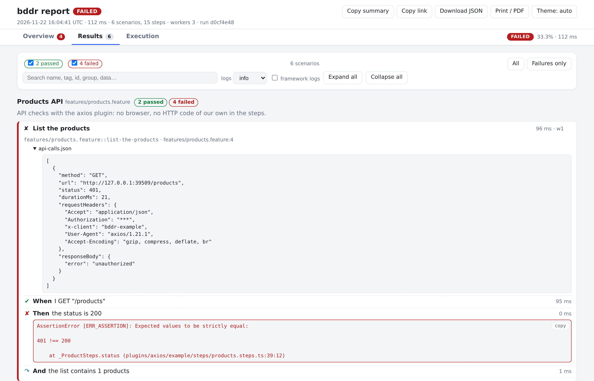

axios (API testing)
The axios plugin gives steps an axios instance that is ready for testing. A 404 does not throw, so "the status is 404" is an ordinary assertion, and every call is recorded in the report.
Install
$ npm i -D @bddr/axios axiosPS> npm i -D @bddr/axios axios$ npm i -D @bddr/axios axiosConfigure
import { defineConfig } from '@bddr/cli';
import { axios } from '@bddr/axios';
export default defineConfig({
features: 'features/**/*.feature',
steps: 'steps/**/*.ts',
plugins: [
axios({
baseURL: 'https://api.example.com',
auth: { bearer: process.env.API_TOKEN },
headers: { 'x-team': 'qa' },
}),
],
});Add import '@bddr/axios'; to one support file so ctx.api, ({ api }) and inject('api') are typed.
Use it in steps
Scenario: Create a product
When I create product "apple"
Then the response status is 201
Scenario: Unknown product
When I get product 9999
Then the response status is 404import { strict as assert } from 'node:assert';
import type { AxiosResponse } from 'axios';
import { When, Then } from '@bddr/runtime';
When('I create product {string}', async ({ api, state }, name: string) => {
state.set('res', await api.post('/products', { name }));
});
When('I get product {int}', async ({ api, state }, id: number) => {
state.set('res', await api.get(`/products/${id}`)); // a 404 does not throw
});
Then('the response status is {int}', ({ state }, status: number) => {
assert.equal(state.get<AxiosResponse>('res').status, status);
});What you get that plain axios does not give
- Status codes are data. 4xx and 5xx do not throw. Set
throwOnHttpError: trueto get axios's default back. - A call log in the report. Each call records method, final URL, status, duration and the request and response bodies. It is attached as
api-calls.jsonwhen a scenario fails, or for every scenario withattach: 'on'. Network errors and timeouts are recorded too. - Masked secrets. Authorization, cookie and API-key headers appear as
***. Bodies are cut atmaxBodyChars. - Credentials from the command line.
-D token=...replaces the bearer token and-D baseURL=...the base URL. - No extra process. A scenario that only uses
apistarts nothing else.

Fixtures
| Name | Scope | What you get |
|---|---|---|
axios | worker | The axios module: isAxiosError, create. |
api | scenario | An axios instance with the base URL, headers, timeout and auth from the options. |
newApi | scenario | newApi({ baseURL, headers }) gives another instance, for a second service or user. It records into the same call log. |
Options
| Option | Default | What it does |
|---|---|---|
baseURL | API base URL. -D baseURL= overrides. | |
headers | Default headers. Accept: application/json is added. | |
timeoutMs | 15000 | Request timeout. |
auth | { bearer } (-D token= overrides) or { username, password } for basic auth. | |
throwOnHttpError | false | Throw on 4xx and 5xx like axios. |
attach | 'only-on-failure' | 'off', 'on' or 'only-on-failure'. |
maxBodyChars | 5000 | Longest body kept in the call log. |
config | Any other axios defaults: proxy, httpsAgent, maxRedirects. |
The plugin uses your project's own axios, so axios.isAxiosError(e) in your steps and the plugin share one copy. plugins/axios/example runs offline with a local products API.